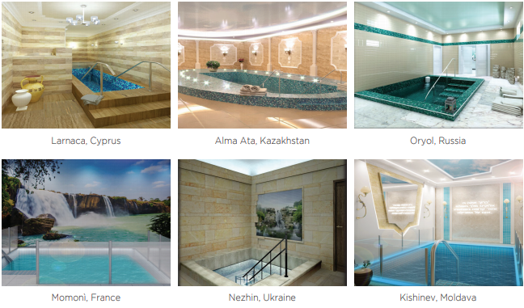

The Shliach for Mikvaos
This is what the architect Rabbi Shmuel Levin calls himself, a chassid who has visited every continent to help in the construction of mikvaos. In a fascinating interview, he tells several moving stories about mikveh constructions in remote locations throughout the world. In addition, he speaks about his own journey to Yiddishkait and the amazing Divine Providence he experienced at the Alter Rebbe’s holy gravesite and at the Rebbe Rashab’s mikveh.
Translated by Michoel Leib Dobry

The shliach, Rabbi Riss, was now confronted with a serious dilemma, since the building material had already been ordered and even paid for. He turned to the expert architect in mikvaos who designed the mikveh for him from the planning stage, Rabbi Shmuel Levin, and asked for his opinion. After a detailed inspection of the mosaic pictures, Rabbi Levin determined that it wasn’t possible that a thin mosaic (0.5 cm.) could have such a deep hollow. Rabbi Levin asked the shliach to film the mosaic for him, turning it around to get a view of every side. When he got the film, he realized that he was right: While the mosaic was smooth, its bottom was made in a three-dimensional style, creating the illusion of a depression in the mosaic stones.
“After all this had been made clear to the original expert rav, he reversed his position and the expensive mosaic was affixed to the floor of the mikveh,” Rabbi Shmuel Levin said with a smile. He is an expert architect in mikveh construction, and his resume includes the planning and building of hundreds of mikvaos in Eretz Yisroel and throughout the globe!
Rabbi Levin lives with his family in Beersheva, but his sphere of influence encompasses the whole world. It seems that there isn’t a continent where he hasn’t come to assist in the construction of a kosher mikveh.
When Rabbi Levin told us about the mikvaos he built or for which he was a partner in their construction, his eyes sparkled and his voice filled with emotion.
THE GOOD RESOLUTION AT THE ALTER REBBE’S ‘TZION’ ELICITED AN IMMEDIATE RESPONSE
Rabbi Shmuel Levin sees his work as a shlichus, a mission “to bring more and more purity to the Jewish People.” But if you would have asked him about this in his childhood, more than three decades ago in the Ukrainian city of Charkov, he wouldn’t have known anything about what a mikveh was and surely nothing about the concept of purity.
Rabbi Shmuel Levin was born in a Jewish home in which Jewish identity was the family’s only spark in connection with Judaism. “The only thing that I knew is that we were Jews, and therefore, we customarily ate matzos for a period of seven days at the start of the spring,” he recalled. “Naturally, alongside the matzos, there were also slices of bread on the table.”
In the early nineties, when the Communist regime collapsed and the Iron Curtain rose, he joined a group of young people that wanted to learn more about their Jewish identity. Alongside his architecture studies at the local university, he began joining activities arranged by the Rebbe’s shluchim in Charkov, as well as those organized by the B’nei Akiva organization. The deciding factor that connected him with Chabad was his participation in the summer camp the Rebbe’s shluchim had organized in those days. “I can safely say that the person who brought me to a deeper understanding of my Jewish identity and eventually led me to Chabad was the Rebbe’s shliach in Charkov, Rabbi Moshe Moskowitz.”
Until then, he hadn’t had a bris mila, and the time had come to do it. In connection with his agreeing to enter the covenant of Avraham Avinu, he told us an amazing story: “In preparation for the Alter Rebbe’s yahrzeit, Rabbi Moskowitz organized a trip to the Alter Rebbe’s gravesite in Haditch for a group of Jewish youngsters. I didn’t know anything about the Alter Rebbe at the time. During the trip, the shliach told us at great length about the Alter Rebbe, his character and his work, and I thirstily took in his words. He added that the Alter Rebbe performed great miracles, and therefore, it would be appropriate to ask whatever we wanted, and he was certain that our requests would be fulfilled. When we came to Haditch, I started writing down all the brachos I wanted for myself and for my family.
“When I finished, I was consumed with shame. I thought to myself: You’re asking and asking, but what are you giving in return? Right then and there, I firmly resolved to have a bris mila. Until then, I had serious concerns about undergoing such a procedure. I had friends who had been circumcised, but when I saw their physical anguish, I became quite fearful. In the months leading up to my trip to Haditch, there were numerous opportunities when efforts had been made to convince me to have a bris mila, but the fear simply paralyzed me. Now, I promised that I would do it the first chance I had.
“After spending a little more than an hour reading my requests and reciting chapters of T’hillim, all the members of the tour group returned together to Charkov, deeply moved.
“That year, Chof-Dalet Teves came out on a Thursday. The following evening, as Shabbos commenced, I came to the Chabad shul as did the rest of my young friends for the Friday night prayer service. Shortly after I arrived, I met a Chabad chassid wearing a hat and suit. I asked one of my friends who he was and what he did for a living. ‘Haven’t you heard?’ my friend asked me. ‘He’s a mohel who came to Haditch yesterday and is spending Shabbos with us here in Charkov.’
“My eyes opened wide in astonishment. Only yesterday, I had decided to circumcise myself at the first opportunity, and here the opportunity comes looking for me! I went up to the chassid and we started a conversation. It turned out that he had just arrived from Eretz Yisroel to accept the appointment as head mohel in the Ukraine. I told him about my good resolution, and we set a time on Sunday morning to do the bris mila. So it was, that I was privileged to be his first customer for a circumcision…
“During our conversation, I asked him why he specifically chose to come to Charkov for Shabbos. It was at that moment that I discovered the intense power of Divine Providence. He told me that after staying at the Alter Rebbe’s gravesite, shortly after we left there, he opened ‘Seifer HaShluchim’ to Ukraine, and there on the page before him was the Moskowitz family. This is the reason that he decided first to come to them in Charkov. I feel that the Alter Rebbe heard about my good resolution, and he sent him to me…”
Looking back, Rabbi Levin said that after the bris mila, his journey along the path of Torah went into high gear. “I started keeping mitzvos openly. Within a short period of time, I had bought a hat and a suit.
“One of the principles I received from the shliach was that while I was changing my lifestyle, I should not leave my parents’ house or cut myself off from my family. I brought Yiddishkait home. While I could have been a guest for Shabbos with the shliach, I specifically preferred to make Kiddush at home. As time passed, I brought my family with me along the path of Torah.”
THE MIKVEH BECAME A PART OF ME
About twenty years ago, with the conclusion of Shmuel’s architectural studies, the entire extended family immigrated to Eretz Yisroel. “As soon as I entered the yeshiva at the Gutnick Center, the mashgiach Rabbi Yosef Shifrin asked me what profession I had learned overseas. When I replied that I had learned architecture, he said, ‘I’m certain that you’ll be building mikvaos.’ I took his words literally, and thus, together with my general yeshiva studies, I started inquiring into the whole subject of mikvaos. Later, I began learning the subject more comprehensively. When I had gained complete familiarity with the learning material, I successfully passed a course at the YNR College of Yerushalayim in supervising mikveh construction, administered by the gaon Rabbi Eliyahu Elcharar, rav of Modi’in and a prominent expert in the field.”
Rabbi Levin began the practical work of mikveh construction through a special office established by the Ohr Avner organization, and he provided mikveh construction services to shluchim throughout the former Soviet Union. The department closed ten years ago due to economic difficulties, and soon afterward Rabbi Levin began working in the field privately. According to Rabbi Levin, he learned a great deal under the tutelage of the great expert in mikveh construction, Rabbi Boaz Lerner, of blessed memory, and he sees himself as continuing in his path with the direction of the Vaad Rabbanei Chabad in Eretz HaKodesh.
Can you tell us about your work with Rabbi Lerner?
When Rabbi Levin speaks about his work with Rabbi Lerner, we can hear his voice tinged with a tone of longing. “There was a strong connection between us. Fourteen years ago, I was already accompanying him in building mikvaos in Givat Olga, Chadera and in northern Netanya. I learned much from him, and even today, I continue all the methods and stringencies that Rabbi Lerner used. After his sudden passing, I was privileged to complete several mikveh constructions that he had begun, such as the mikveh in Sri Lanka.”
THE ORNATE MIKVEH IN BIROBIDZHAN
It seems that behind every mikveh construction there is an amazing story. On more than one occasion, Rabbi Levin had to work under very harsh and complex conditions. There are mikvaos that were a real challenge. “I’ll never forget the work to build the mikveh in S. Petersburg four years ago. It was the middle of the winter, but the shliach Rabbi Ben-Tziyon Lipsker was determined that we should construct the mikveh as soon as possible, without waiting for the summer. It was brutally cold outside, about twenty degrees below zero, and in order to make certain that the cement had hardened sufficiently, they inserted special electrical lines to heat it. It took three days to harden! Another interesting detail that attracted my attention was the fact that the mikveh was built by Moslems who worked with tremendous dedication.”
One remote mikveh construction he supervised with some considerable effort was in Nicaragua, where he had been invited by the Rebbe’s shliach, Rabbi Dudu Atar. “This was a mikveh that we miraculously built within a short period of time. Making the cistern took place on the sixth of Shvat and the mikveh opened on the second of Nissan! … The trip to Nicaragua took about thirty hours in order to stay there for just twelve hours. The workers were on the job from sunrise to sunset.
“At a certain stage, the work on the cistern was delayed. As a result, the need arose to bring expert scaffolders to go down into the cistern. Such workers could not be hired on short notice. In a conversation I had with a rav trained on this subject, he made it clear to me that I would need to come back a second time. The planned time for my stay was limited, and this put the pressure on me. When the workers asked if they could take a break, the little optimism I had that we would finish this important part of the job while I was still there started to fade. However, instead of sinking into despair, I turned to the Rebbe and asked for his bracha. Incredibly, when the team came back to work, they returned with renewed strength and ideas for how to solve the urgent problems, which they successfully did. Within three hours, they had completed the cistern, and I even had some time left before I had to leave for the airport.”
Talking about remote locations, Rabbi Levin mentioned his most recent mikveh construction: in the Russian city of Birobidzhan, located in the country’s far eastern region along the border shared with mainland China. “I returned from there only last week,” he told us. “This city had been built ninety years ago by Stalin, may his name be erased, designed specifically for sending Jews from central Russia into exile. While Jews represent only four percent of the city’s general population, they receive tremendous honor from government authorities.
“The city’s first mikveh had been constructed fifteen years earlier. However, since it was constructed without proper architectural supervision, it had to be demolished and recast with the necessary repairs and according to Chabad requirements. Architect Yedidya Chasin from Kfar Chabad designed the external structure, and he did an excellent job. This is a city located a very long distance away, yet it was the site for the construction of a most ornate mikveh, and with G-d’s help, in another three months, we will celebrate its completion. The shliach Rabbi Eliyahu Riss will open it for all.”
MIKVEH MIRACLES
Rabbi Levin has numerous stories of miracles and wonders in connection with this subject. Here is one of them:
“Four years ago, the shliach for Russian speakers in the Ukrainian town of Krivoy Rog, Rabbi Levi Seligson, called me and asked if I could come and inspect the mikveh in his city. At the first available opportunity, I boarded a flight and came to Krivoy Rog. After several hours of thorough examination, I found a few possible problems, among them in the canals channeling rainwater to the mikveh. In practical terms, the mikveh was kosher, but not according to the strictest standards, and we invested considerable efforts making the necessary repairs.
“When the work was completed, I asked Rabbi Seligson why he called me, and he told me about the numerous answers received from the Rebbe by women in the community in Igros Kodesh, all of which dealt with the subject of mikvaos. When I asked to see the letters, I was amazed. One such response appears in Vol. 18, where the Rebbe writes as follows: ‘…And similarly, a few lines on what needs to be repaired in the city. It’s amazing what he writes that it’s impossible to know exactly and in detail the repairs for channeling the mikveh, for the water certainly must be changed from time to time, etc., and we see how this matter is done. Furthermore, later poskim have already stated at length that regarding the subject of mikveh, the restriction of not offending those who came before does not apply.’ The Rebbe described exactly what the problem was!
“In additional letters, the Rebbe also speaks about the necessary repairs to make in the mikveh. However, the amazing thing was the fact that most of the repairs he discussed were ‘for channeling the mikveh.’ Faced with such a clear answer, I was astounded. I suggested to Rabbi Seligson that he immediately write to the Rebbe in request of a bracha, while updating him that everything in need of repair had been fixed.
“He did as I suggested, and the two of us were stunned by the answer received in Vol. 13, pg. 79: ‘Regarding what he writes about the matter of the mikveh in Kibbutz Mefalsim, he needs to speak with the Center for Family Purity in the Holy City of Yerushalayim, may it be rebuilt and re-established, and he naturally has the authority to tell the center’s chairman, HaRav HaGaon, etc. Halperin, sh’yichyeh, who does this at my suggestion, and he will surely write later in connection to the construction of the mikveh and all the aforementioned.’
“We read the answer and were completely overcome. During all the repairs, I remained in contact with Rabbi Halperin, the rav of Yerushalayim’s French Hill community, as the Rebbe explicitly mentioned a rabbinical figure named Halperin with whom I should consult about mikvaos. I was in total shock. These are the kind of stories where you literally feel the Rebbe Melech HaMoshiach’s constant involvement in everything you do. And if that wasn’t enough, our breath was almost taken away when we learned that the original recipient of this letter was Rabbi Alexander Sender Yudasin from Eretz Yisroel, who, prior to the Second World War, had been the last rav of Krivoy Rog…”
If we’re dealing with cases of Divine Providence, the following story, also told by Rabbi Levin, is no less amazing and exciting:
“About seven years ago, I was asked to design the mikveh in Babruysk, Belarus, built by its Chabad shliach, Rabbi Shaul Chababo. I gave him the plans and waited to receive pictures from the casting process. When the pictures arrived, I realized that the pit was slightly smaller than what I usually design. I looked at the original plan and was amazed to see that it wasn’t the building contractor who had made a mistake; it was me. There was a slight deviation in my architect sketches, and I had designed the pit smaller.
“While there was no question of the mikveh’s halachic fitness, since we from the very outset double the size of the cistern to eighty se’ah, nevertheless, there had been an error. Instead of the pit being able to hold 1,452 liters, it could hold only 1,425 liters. Before I planned to call Rabbi Chababo and tell him about the mistake, I contacted Rabbi Eliyahu Landa from B’nei Brak in connection with the Rebbe Rashab’s mikveh in Rostov. After our conversation, he sent me a file he had written about the mikveh, including a sketch and several halachic explanations from his father, Rabbi Yaakov Landa a”h. When I read the file, I came across a stunning piece of information. It showed that in the Rebbe Rashab’s original mikveh in Rostov, there had been the exact same mistake that occurred with the mikveh in Babruysk. I immediately called Rabbi Chababo, and instead of apologizing, I shared with him the fact that his mikveh had been built according to the exact measurements of the mikveh in Rostov…”
NOT JUST AN ARCHITECT, ALSO A SHLIACH
As one of the cornerstones of Rabbi Levin’s shlichus as a mikveh builder and a Chabad chassid, he strives everywhere he is invited to construct a mikveh as per the ruling of the Rebbe Rashab – “bor al gabbei bor.” “I receive constant support and encouragement from the Vaad Rabbanei Chabad. In general, when I explain to people about the extra stringencies, they give their consent without any problem. However, there are times when there is strong opposition on the matter.
“Recently, I was asked to plan the construction of a mikveh on one of the settlements under the jurisdiction of the Matteh Binyamin Regional Council in the southern Shomron. Most of the residents are affiliated with the Mizrachi community. Sometime earlier, a family from Mexico had come to live on the yishuv. The father had checked the status of the mikveh and was appalled by what he found. He called a meeting of all the yishuv’s community leaders and informed them that he was prepared to donate money to renovate the mikveh. Everyone agreed, and the donor suggested an expansion of the entire building, even the construction of an additional pit for immersion. He looked for a professional in the field to assist him, and this brought him to me. During our first meeting, I explained to him the importance of building a mikveh according to the guidelines of ‘bor al gabbei bor.’ He gave his consent, as did the rav of the yishuv. However, shortly thereafter, the donor called me to say that he had consulted with others and he now opposed building the mikveh by Chabad standards. As a Chabad shliach, since I have an obligation to act according to the ways of peace and pleasantness, I decided to prepare two building plans for the mikveh.
“A meeting was held for all those involved in the construction process, including the rav and the donor, and I asked to be recognized. I told those present that while we had invested more than one million shekels in the mikveh project, not everyone would be able to make use of the finished product. The donor was bewildered and immediately asked why. I explained to him that on the yishuv and in its surrounding area lived members of the Chabad Chassidic community, and they would not come to this mikveh. I emphasized that every mikveh built according to Chabad custom was not only just as kosher as those used in other communities, they met by far the highest and most stringent standards. Everyone, including the rav, was most impressed by my presentation and agreed to my request. Later, I visited with the shliach on the yishuv and informed him that he would be getting a Chabad mikveh.”
Since Rabbi Levin’s reputation as an expert in designing and building mikvaos is known far and wide, even those who are not Chabad chassidim have sought his services. This has resulted in more and more Chabad mikvaos being built, even in non-Chabad locations.
“I’ll tell you about another incident,” Rabbi Levin told me. “One day, I got a telephone call from the municipal authorities in a city in northern Eretz Yisroel. They wanted me to draw up plans to give a facelift to the city’s old mikveh and add another pit for ritual immersion. The city government didn’t understand anything about mikvaos; they merely carried out their work orders and were pleased when I informed them that I would be designing for the city the finest mikveh possible.
“As the planning stage progressed, I asked the building contractor to contact me a few days before setting the pit in concrete to make certain that I could be there when the job was done. During this time, I had been invited to Beit She’an to design a mikveh for the city there as well. I traveled to Beit She’an by train. During the journey, the contractor from the other northern city called me with an update: he intended to do the casting for the mikveh the following morning. ‘Didn’t I ask you to give me an update a few days in advance?’ I rebuked him. However, my scolding left no impression on him. I thanked G-d that I was close enough to the city that I could get there that night. I slept there, woke up early the following morning, and headed for the construction site.
“When I checked the work on the mikveh, I made a striking discovery: someone had cancelled the construction of the lower pit. When I asked for an explanation, the contractor replied that several local Litvishe rabbanim came and argued that it was a waste of time and money. ‘I’m the architect. How can you change the plans without consulting with me first?’ I claimed. When they countercharged that the additional pit would cost far more money, I refuted their argument since filling the pit with cement would cost even more. I asked them to stop everything and invited senior municipal officials to the site. When they realized that I was determined to carry out the original plan, they demanded that the contractor build the mikveh with the lower pit.
“When the casting process had been completed, I thought to myself about the incredible Divine Providence that arranged for me to be in a nearby city the day before, enabling me to be there for the procedure. If I had been much farther away, this mikveh would not have had a lower cistern. It’s interesting to note that after the mikveh construction was completed, specifically those Litvishe rabbanim brought Rabbi Yisroel Yosef HaKohen Hendel, rav of the Chabad community in Migdal HaEmek, to the site to check the mikveh and issue a letter of recommendation in order that Chabad chassidim will use it as well…”
What essentially is the complaint of the misnagdim against the ‘bor al gabbei bor’ approach?
“One of the biggest experts on the subject of mikvaos in our generation is Rabbi Meir Poisen of Modi’in Illit. He has been building mikvaos in Eretz Yisroel and throughout the world for fifty years. On one occasion, I participated in one of his lectures on the subject, and he spoke about the qualities of ‘otzar zeriya’ without mentioning the lower cistern according to the Rebbe Rashab’s approach. At the conclusion of the lecture, I went over to him and inquired about this: Since all the necessary stringencies exist in this approach, why didn’t you mention this? To my surprise, he expressed no objection.”
In any case, what is the basis for the opposition?
“Those who oppose the Rebbe Rashab’s approach claim that the Divrei Chaim of Sanz also rejected ‘bor al gabbei bor.’ It was always important to me to understand the source and reason for his opposition. Thus, two years ago when I was staying in Netanya for Pesach, I paid a visit to the city’s Kiryat Sanz neighborhood and spoke with their expert in mikvaos. He told me about the incident brought before the Sanzer Rebbe that led to his opposition. To my great surprise, it turned out that the mikveh that had elicited this opposition had been built in a completely different manner from the ‘bor al gabbei bor’ approach.
“I heard from Rabbi Avraham Michoel Halperin, the rav of Yerushalayim’s French Hill community, that the previous Sanzer Rebbe immersed himself in the Chabad mikveh in Yerushalayim. When he was asked about this, he said that he had checked into the matter and this kind of mikveh was not what his grandfather had meant.”
BUILDING MIKVAOS IS LIKE A REDEMPTION
Rabbi Levin is a proud chassid. He wears a yarmulke bearing the words ‘Yechi Adoneinu’, and we asked him how those who are not Lubavitchers accept this.
“In every place I visit for mikveh construction, I am warmly welcomed,” he responds with a smile, adding that this merely compels him to speak everywhere about Moshiach and the Redemption. “I learn the weekly D’var Malchus, and therefore, whenever called upon to do so, I am always prepared to give over a few points from these sichos and spread the announcement of the Redemption.
“In addition, before starting every construction project with building contractors, I emphasize to them the tremendous privilege they have in building a mikveh tahara. I compare the process of building a mikveh to the Future Redemption.”
What do you mean?
“At almost every mikveh construction, there are sudden and uncontrollable delays. Sometimes, we can clearly sense that these are Heavenly-sent delays. It has often reached a point, that when there seemed to be no problem and everything was running smoothly, I began to worry that maybe there was some hidden problem with the mikveh. Similarly, we find with the Future Redemption that while it stands ready to be revealed, it hasn’t taken place yet. Nevertheless, we know that we’re talking about a delay concealing good and purity within it for the Jewish People, and we anticipate its arrival.”
In conclusion, Rabbi Levin wishes to note that a mikveh facility’s exterior splendor, beauty, and attractive interior appearance is no less important than its halachic stringencies. “This is the reason that in recent days, we have established cooperative efforts with a famous designer to provide a unique and beautiful style to the new mikvaos that we will build from this day forward. The external beauty is no less important than the inner beauty,” he said resolutely in closing.
DIVINE PROVIDENCE AT THE RASHAB’S MIKVEH
One of the more prominent signs that Rabbi Levin received, pushing him to dedicate his life to working on mikveh construction, was when he visited the Rebbe Rashab’s mikveh in Rostov. “In 5760, I was on shlichus in Rostov and assisted Rabbi Elyashiv Kaploun, who was then the Rebbe’s shliach there. By Divine Providence, around this same time, Chassidim revealed the location of the mikveh used by the Rebbe Rashab, and it underwent a comprehensive renovation prior to its reopening. The person who gave the final approval for the mikveh’s reactivation was Rabbi Moshe Yehuda Leib Landa, rav of B’nei Brak. After verifying the mikveh’s fitness, he asked that it remain closed until it could be filled with rainwater.
“As the High Holiday season that year approached, rain fell in great quantity, and just before Sukkos, there were only five centimeters left to fill. I had a strong desire to immerse myself in this special mikveh, and I davened that before my scheduled return flight to Eretz Yisroel, enough rain would fall to fill the cistern. By Divine Providence, the night before our flight, there was a sizable rainfall, and at three o’clock in the morning, Rabbi Kaploun called to inform me that the cistern was filled and was ready for immersion. I was deeply moved that I had been privileged to be among the first people to immerse in the refurbished mikveh once used by the Rebbe Rashab.”
Nosson Avrohom. "The Shliach for Mikvaos." Beis Moshiach, no. 1153 (February 7, 2019).